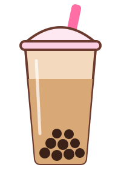

Taro
Kind of sweet and nutty, and it's purple, which is a plus. I get it when I want something that tastes like dessert.
my boba page. opinions are mine, argue with me.
I got into boba a couple years ago and now I judge every shop by how chewy the pearls are. I made this page to keep track of the flavors I actually like, rank them (my ranking, no one else's), and write down how I order so I stop forgetting.

Kind of sweet and nutty, and it's purple, which is a plus. I get it when I want something that tastes like dessert.
A little bitter in a good way. It gets too sweet really fast, so I keep the sugar low.
The syrup makes stripes down the cup and it looks great. Tastes like caramel. Drink it fast though.
| # | Drink | Pearls? | Score |
|---|---|---|---|
| 1 | Brown sugar milk tea | Always | 9.5 |
| 2 | Taro milk tea | Yes | 9 |
| 3 | Jasmine green tea | Sometimes | 8 |
| 4 | Matcha latte | Sometimes | 8 |
The first sip with a pearl in it is the best part of my day. I'm not joking. me, at 4pm on a Tuesday
Tapioca, which comes from the cassava plant. They get boiled and then sit in brown sugar syrup.
The pearls usually are. The milk isn't, so ask for oat or almond. Honey in the syrup is worth checking too.
They sat too long. Pearls are good for a few hours, so drink it soon after you buy it.